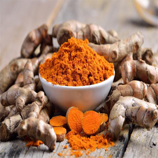
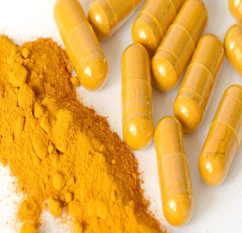
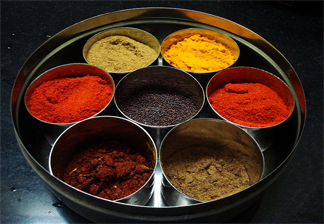

Entre los multiples beneficios de la curcuma encontramos que sus componenentes pueden ayudarnos a prevenir desde enfermedades cardiacas, ya que reduce el colesterol, hasta trastornos depresivos, al mejorar el estado de animo.
La cúrcuma es una planta perenne herbácea, que alcanza una altura de hasta 1 metro. Con rizomas muy ramificados, de color amarillo a naranja, cilíndricos y aromáticos. Las hojas están dispuestas en dos filas. Se dividen en vaina de la hoja, pecíolo y lámina de la hoja.

Propiedades medicinales

Para los problemas de estómago: así como otras especias picante, la cúrcuma es una buena aliada para algunos trastornos digestivos, ya que estimula las secreciones y ayuda a la digestión. Es recomendada para personas con dispepsia, falta de apetito, gastritis, digestión lenta. Esto se debe a sus principios activos, que ayudan a producir más jugos gástricos y pancreáticos, sirviendo a su vez para equilibrar el pH en estos órganos.
Para evitar la flatulencia: esto es debido a que la cúrcuma es carminativa, ayudando a eliminar los gases que se alojan en el intestino. Se aconseja para evitar cólicos intestinales y flatulencia, también para la atonía estomacal.
Para tratar problemas hepáticos: la cúrcuma es un excelente tónico biliar que protege las funciones del hígado. Esto es por la curcumina (compuesto que le otorga su característico color amarillo anaranjado). También posee otras sustancias muy buenas para este órgano, ayuda a eliminar las piedras en la vesícula biliar, es antiinflamatoria, favorece en el drenaje hepático, es eficaz para poder digerir mejor las comidas copiosas. Se recomienda en pacientes con cirrosis, ictericia, trastornos hepáticos y de vesícula.
Para tratar algunos tipos de cáncer: las investigaciones demuestran que la cúrcuma contiene diez compuestos anticancerígenos, sirviendo para los casos de cáncer de mama, de duodeno, de piel y de colon. Ayuda en los tratamientos y a superar los efectos secundarios que tienen los medicamentos contra esta enfermedad (como ser la quimioterapia).
Para la artritis reumatoide y síndrome del túnel carpiano: gracias a sus propiedades antiinflamatorias, la cúrcuma es un aliado para los pacientes que sufren de reuma, artritis y síndrome del túnel carpiano (en la muñeca, algo muy frecuente en la actualidad por el uso excesivo del teclado).
Para eliminar la depresión: desde hace miles de años, esta especia ha sido utilizada por la Medicina Tradicional China para curar y tratar la depresión y otros trastornos psicológicos o afectivos. La cúrcuma tiene muchos componentes estimulantes para el sistema nervioso y además, ofrece buenos efectos sobre el sistema inmune y los estados de ánimo. Sirve para atenuar las consecuencias del estrés también.
Para proteger el corazón: las investigaciones han demostrado que consumir cúrcuma ayuda en la salud cardiovascular. A su vez, sirve para reducir el colesterol y el nivel de triglicéridos en sangre de manera natural. Previene ataques cardíacos.
Para aumentar la inmunidad: esta especia tiene la capacidad de incrementar la capacidad inmuno moduladora del cuerpo, gracias a varios de sus nutrientes (como ser el zinc, el cobre o los polisacáridos). Es bueno para las personas con defensas bajas por motivos de estrés, antes de un examen o evento importante.
Para tratar problemas respiratorios: la cúrcuma se utiliza en Asia para tratar la bronquitis de manera natural, por su acción antiinflamatoria. Es adecuada para el tratamiento de la EPOC, por sus propiedades antioxidantes.
Para proteger el organismo de los radicales libres: esta especia de color amarillo nos ayuda a eliminar los efectos nocivos que causan los llamados “radicales libres”, extrayendo del cuerpo todo lo negativo y lo que nos enferma.
Para problemas de la piel: usada en polvo, la cúrcuma es muy buena para afecciones como hongos o pie de atleta y para la psoriasis.
Cómo se usa la cúrcuma en la gastronomía

El nombre científico es cúrcuma longa, una planta perenne perteneciente a la familia del jengibre. Procede de un arbusto de hasta un metro de alto con hojas verdes y flores amarillas y blancas. Dado su color intenso, se usa como colorante para los alimentos, como ser el arroz. Es uno de los principales ingredientes de las salsas, guisos y otros platillos de Oriente, Sudeste Asiático y Medio Oriente.
Es conocida como un azafrán, presente en la comida de China, Tíbet, Indonesia e India. En la industria alimenticia actual, se la denomina “E100”, sirve como colorante para mantequillas, quesos, mostazas y batidos, siempre en proporciones muy pequeñas por lo que casi ni se distingue su sabor. Es uno de los componentes del curry en polvo, lo que le otorga ese color amarillo fuerte.
Para cualquier preparación en una olla, la cantidad correcta de cúrcuma es una cucharita de postre y se combina muy bien con otras especias como ser la pimienta o el comino. Puedes utilizarla para todos los platillos con arroz, pastas, sopas, salsas, legumbres, ensaladas, verduras hervidas, etc. También se usa para platos con huevo y pescado y uno de las recetas más conocidas es el pollo al curry o los pinchos de pescado.
Es un sustituto ideal del azafrán porque la cúrcuma es menos costosa aunque con un sabor diferente. Con una cucharada de esta especia y mayonesa puedes hacer una salsa deliciosa (también con crema de leche).
Contraindicaciones de la cúrcuma
Es preciso consumir la cúrcuma en cantidades moderadas porque su sabor es muy penetrante y no a todos les gusta, pero además de ello, porque puede traer como consecuencia algunos efectos secundarios. Se aconseja evitar su ingesta en las mujeres embarazadas y aquellos que tengan problemas graves en la vesícula biliar.